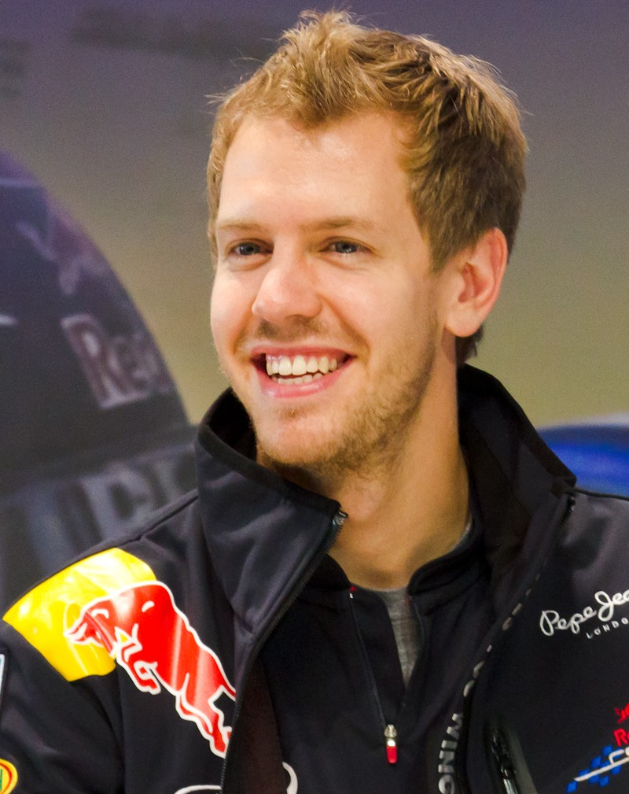

SINTESI DELLA STAGIONE 2011 - IL TRIONFO DI SEBASTIAN VETTEL
Era V8 Aspirati • 19 Gran Premi disputati

Il 2011 ha visto l'introduzione dell'ala mobile DRS e delle gomme Pirelli, oltre allo scarico soffiato sviluppato da Red Bull. Sebastian Vettel ha dominato la stagione a bordo della RB7, conquistando 15 pole position (record storico) e 11 vittorie, laureandosi il più giovane due volte Campione del Mondo all'età di 24 anni e 98 giorni.
🏆 Campione del Mondo Piloti: Sebastian Vettel (Red Bull Racing) - 392 pt
🥈 Secondo classificato: Jenson Button (270 pt)
🏁 Scuderia Campione Costruttori: Red Bull Racing
🏎️ Numero Gran Premi: 19
LA MIGLIOR GARA DELL'ANNO: GRAN PREMIO DEL CANADA (MONTREAL)
Circuito: Circuit Gilles Villeneuve
La gara più lunga nella storia della Formula 1: 4 ore, 4 minuti e 39 secondi, funestata da pioggia torrenziale, bandiera rossa per oltre due ore e sei ingressi della safety car. Jenson Button vive una giornata epica: incidente con Hamilton, collisione con Alonso, foratura, penalità drive-through, 6 soste ai box e ultimo in classifica. A venti giri dalla fine, con asfalto che si asciuga, Button rimonta indemoniato e all'ultimo giro induce Sebastian Vettel all'errore alla curva 6, superandolo per una vittoria immortale.
IL SORPASSO PIÙ SPETTACOLARE & DUELLO DELL'ANNO
Jenson Button su Sebastian Vettel all'ultimo giro a Montreal
Al 70° e ultimo giro del GP del Canada, Button mette pressione a Vettel: il tedesco tocca la linea bagnata alla curva 6 perdendo il retrotreno della Red Bull, e Button si infila all'interno per tagliare il traguardo da vincitore nella corsa più pazza di sempre.